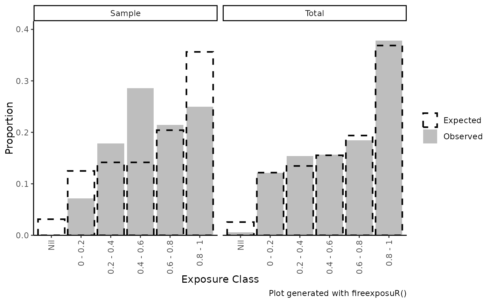

fire_exp_validate_plot() Visualizes the results from
fire_exp_validate() in a bar plot
Usage
fire_exp_validate_plot(
validation_table,
what = c("both", "total", "sample"),
title
)Arguments
- validation_table
The output table from
fire_exp_validate()- what
string. Which plot should be returned? Can be
sample,total, or"both"(Default)- title
Optional. String. Add a custom title to the plot.
Examples
# read example hazard data
hazard_file_path <- "extdata/hazard.tif"
hazard <- terra::rast(system.file(hazard_file_path, package = "fireexposuR"))
# generate example non-burnable cells data
geom_file_path <- "extdata/polygon_geometry.csv"
geom <- read.csv(system.file(geom_file_path, package = "fireexposuR"))
polygon <- terra::vect(as.matrix(geom), "polygons", crs = hazard)
no_burn <- terra::rasterize(polygon, hazard)
# generate example fire polygons by buffering random points
points <- terra::spatSample(terra::rescale(hazard, 0.8),
30, as.points = TRUE)
fires <- terra::buffer(points, 800)
# PLEASE NOTE THIS EXAMPLE DATA DOES NOT GENERATE MEANINGFUL RESULTS
# compute exposure and remove non-burnable cells
exposure <- fire_exp(hazard, no_burn = no_burn)
# results as table
validation_outputs <- fire_exp_validate(exposure, fires)
# results as bar chart
fire_exp_validate_plot(validation_outputs)
